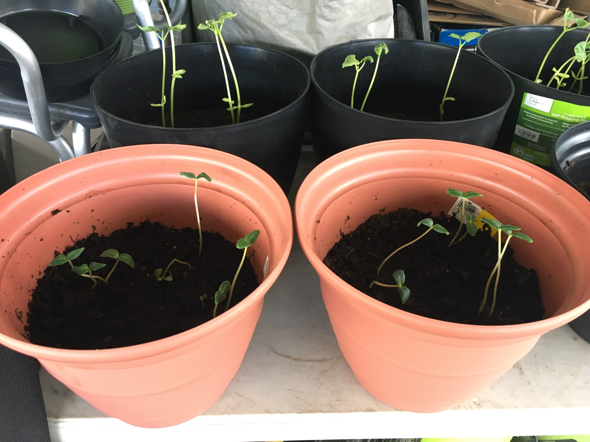
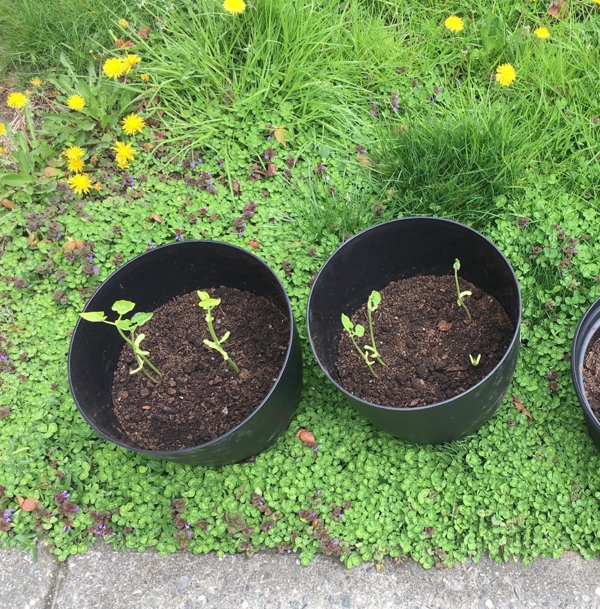
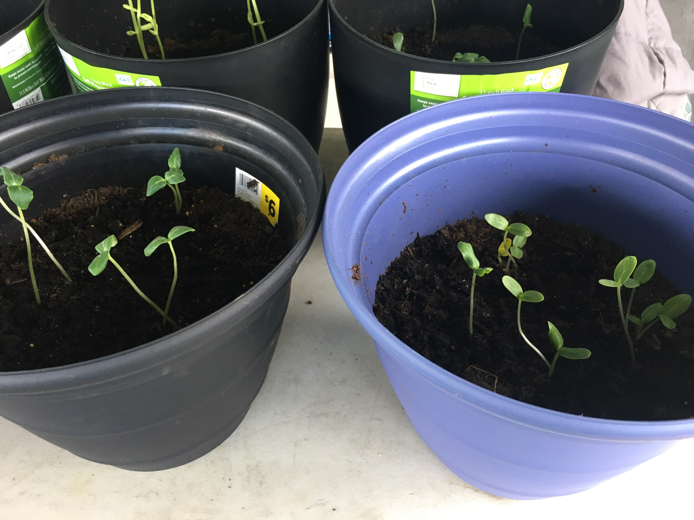
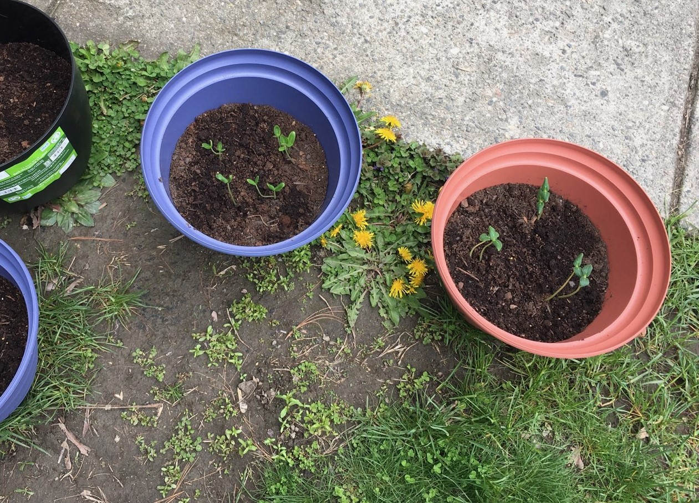

I was not entirely sure what to put in the tables,
as I don't know what would be deemed helpful/useful in this application.
So I'd love to share a new hobby I picked up during this class:
| Plant | Picture | Plans |
|---|---|---|
| Pickling cucumbers |  |
Will pickle them in varuious recipes
handed down from family |
| Green beans |  | Will probably also pickle these, they're called dilly beans! |
| Cucumbers 'regular' |  | More than likely will be used in salads, or on their own |
| Squash |  | As this can be an aggresive vegetable, and its long shelf life, it will be used for home meals, and the excess will be donated to my local shelter/food shelf at the end of the growing season. |